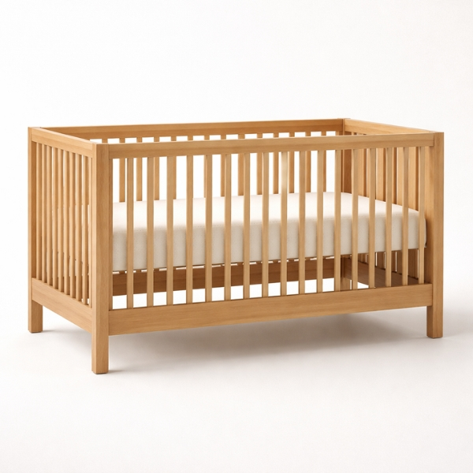
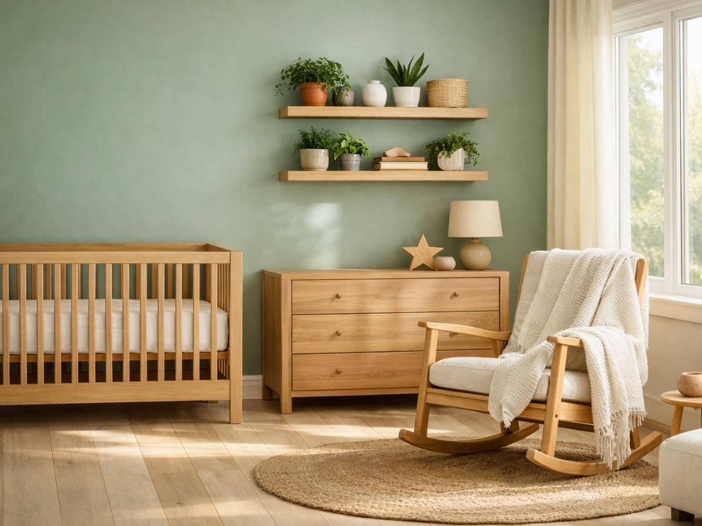
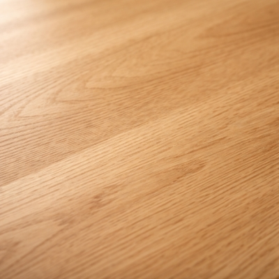
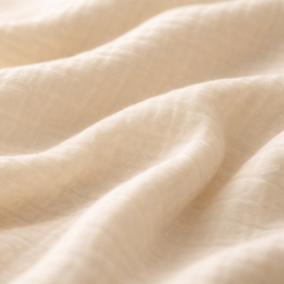
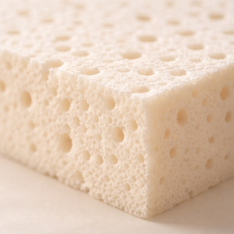
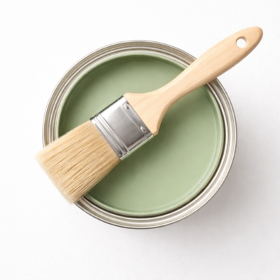
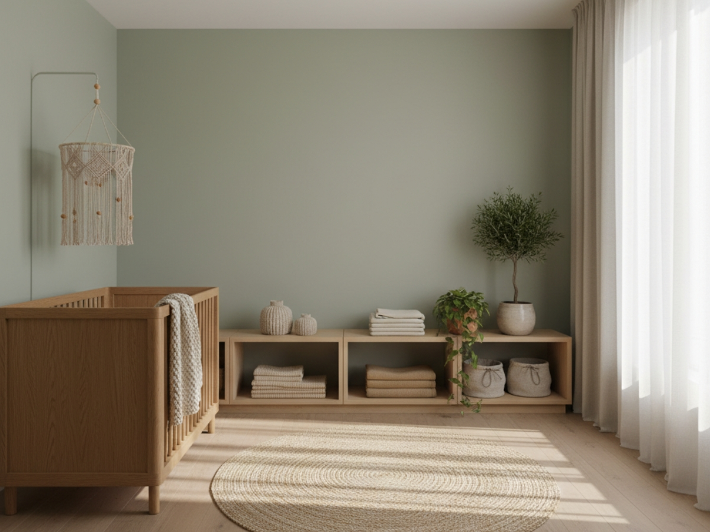
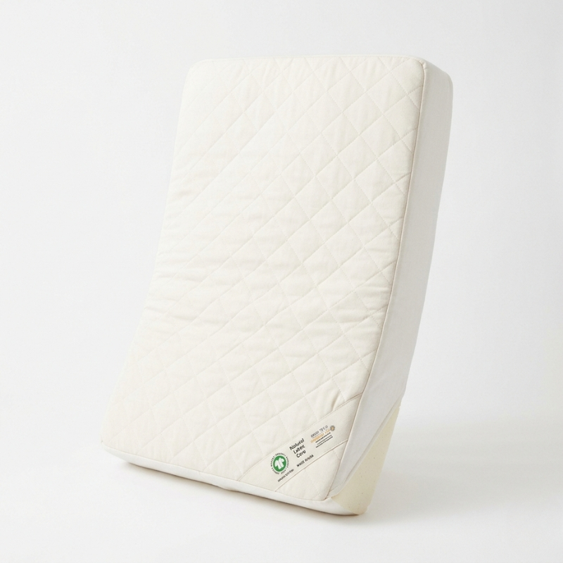
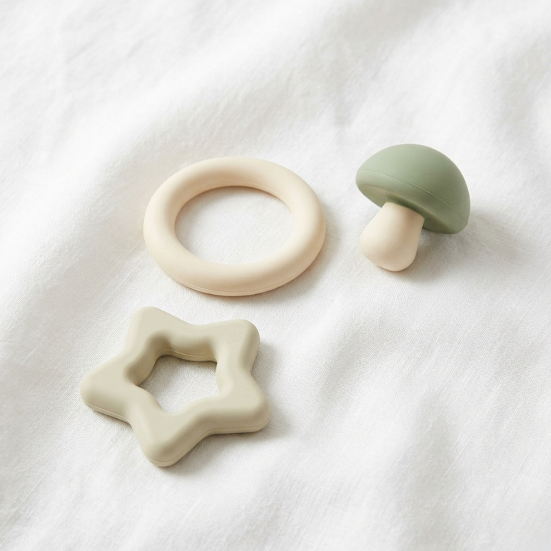
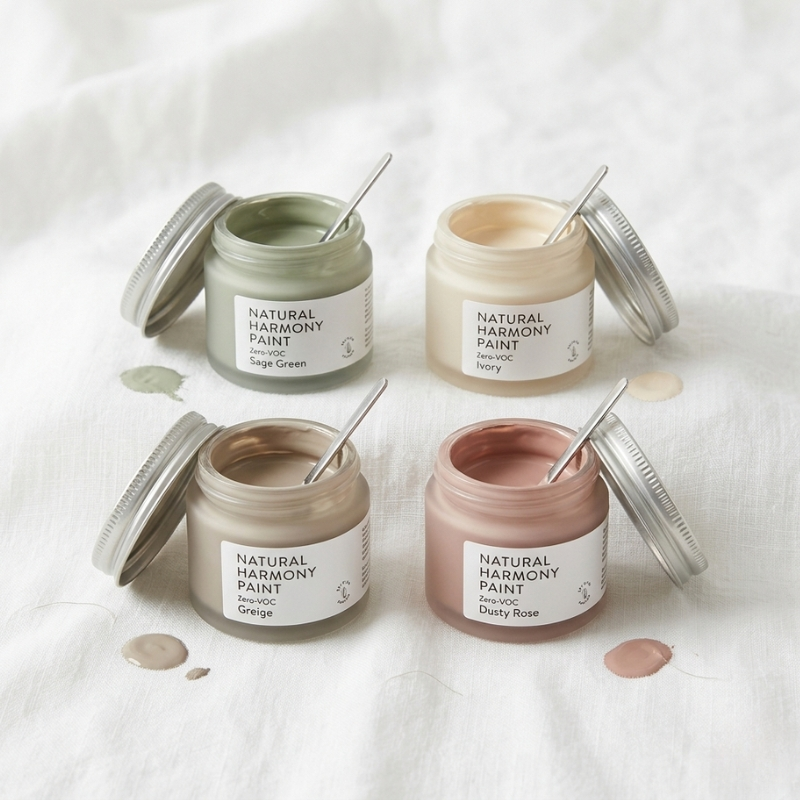

FSC Certified Oak Crib
Sustainable hardwood with non-toxic finish
View ProductAs an affiliate, we may earn a commission from qualifying purchases at no cost to you. This helps support our curated sanctuary.
Building a nursery that's both beautiful and kind to the world your child will inherit.

True luxury has always been about rarity, quality, and lasting beauty. Today, it's also about responsibility. The eco-luxe nursery embraces this evolution — where the finest materials happen to be the most sustainable ones, where the most beautiful pieces are those that honor both craftsmanship and conscience.
Sustainability doesn't mean compromise; it means intention. When we choose FSC-certified wood over particle board, organic cotton over synthetic blends, and non-toxic finishes over chemical-laden alternatives, we're not sacrificing beauty — we're elevating it. The most luxurious nursery is one that will remain beautiful for generations, both aesthetically and ethically.
The eco-luxe nursery is built on a foundation of materials that are both beautiful and responsible. These aren't compromises — they're the new luxury.

Forest Stewardship Council certification ensures your furniture comes from responsibly managed forests. Look for solid wood pieces that will age beautifully and can be passed down through generations.

Global Organic Textile Standard guarantees organic fiber content and ethical manufacturing. These textiles are free from harmful chemicals and get softer with each wash.

Derived from rubber tree sap, natural latex provides superior comfort and durability in mattresses and cushions without synthetic foams or harmful off-gassing.

Zero-VOC and plant-based paints create beautiful walls without compromising indoor air quality. Many sustainable brands offer rich, sophisticated colors that rival traditional paints.
When shopping sustainably, look beyond marketing claims to actual certifications. B Corporation status, GREENGUARD Gold certification, and Cradle to Cradle approval are meaningful indicators of a brand's commitment to environmental responsibility.
The best sustainable brands are transparent about their supply chain, offer take-back programs, and create products designed for longevity rather than obsolescence. They understand that true luxury lies in creating pieces that remain beautiful and functional for decades, not seasons.
The most revolutionary act is to build a nursery that honors both the child within it and the world they'll inherit.
— Sustainable Design Philosophy

These sustainably-sourced pieces prove that responsible choices create the most beautiful spaces — for your child and the world.
Sustainable Luxury

Sustainable hardwood with non-toxic finish
View Product
GOTS certified with natural latex core
View Product
Pure rubber from sustainable plantations
View Product
Zero-VOC paint in curated neutrals
View Product"Sustainability isn't about what we give up — it's about what we give forward. Every choice we make in creating our child's first space is a choice about the world we're creating together."Closing Note — Velvet & Cradle
Receive weekly curated nursery inspiration and exclusive early access to our designer guides directly in your inbox.